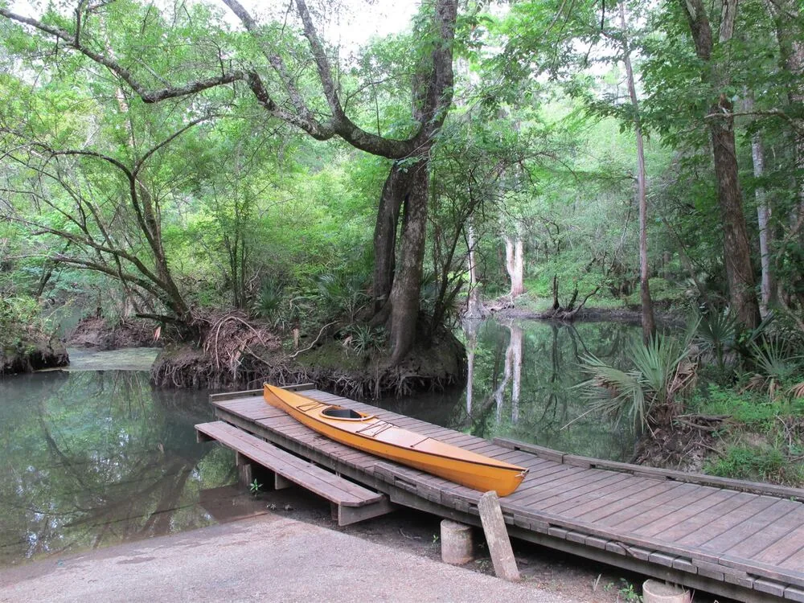
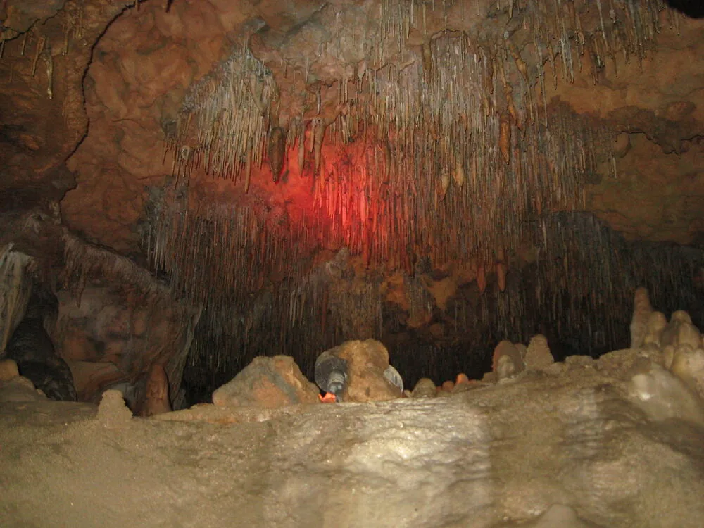

Dignity
Every person deserves respect, clear information, and the freedom to make informed choices about their wellbeing.
We work alongside people in and around Marianna to make wellness practical, welcoming, and easier to reach—especially between doctor visits and during difficult seasons.
To strengthen community wellness in Jackson County through useful health education, improved access to nourishing food, inclusive movement, and relationships that help no one feel alone.


Photography: Mike Tilley (CC BY 3.0) and Bruin79 (CC BY-SA 4.0), via Wikimedia Commons.
Neighbors understand their health, know where to find support, have realistic ways to eat well and move, and feel connected to people who care.
Local organizations share knowledge and resources instead of working in isolation.
Every person deserves respect, clear information, and the freedom to make informed choices about their wellbeing.
Wellness grows through trusted relationships. We create spaces where people feel welcomed, heard, and valued.
We focus on useful ideas that fit everyday life, local resources, and the realities families face.
Lasting change comes from listening and working alongside residents, volunteers, and community organizations.
Small, consistent actions can protect health and build confidence long before a crisis arrives.
We believe every person and every neighborhood holds strengths that can become a healthier future.
Learn how our four program areas turn community-centered wellness into practical opportunities.